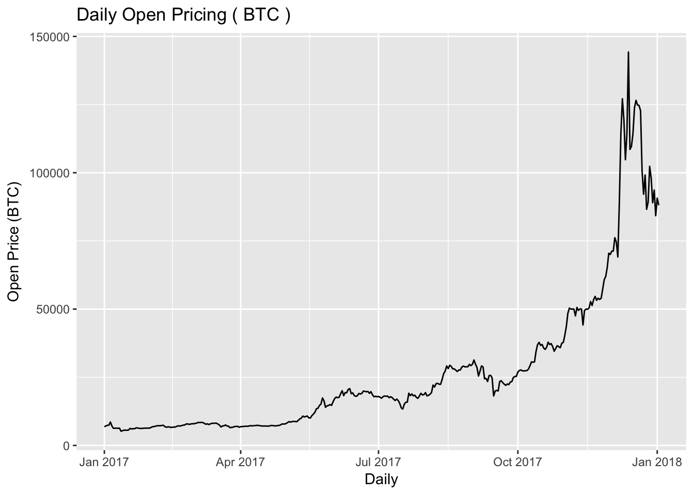

In the past, the best way to get stock prices was to use either Google Finance or Yahoo Finance data streams. These have since become difficult to keep up to date and thus another outlet to get this information is AlphaVantager. Following is a simple R implementation to get up to date data. You will be able to thus use this to find the information.
Above we provide two different libraries that will give us the functionality we need.
symbol <- "BTC"
av_api_key(advantagerKey)
data <- av_get(symbol = symbol,market = "CNY", av_fun = "DIGITAL_CURRENCY_DAILY") In order to make this more useful, we will parameterize these functions in order to make data exploration easier to use when looking at multiple stocks.
head(data)## # A tibble: 6 x 11
## timestamp open..cny. high..cny. low..cny. close..cny. open..usd.
## <date> <dbl> <dbl> <dbl> <dbl> <dbl>
## 1 2014-04-01 2813.955 2918.639 2813.955 2859.937 453.4276
## 2 2014-04-02 2864.585 2972.419 2558.878 2562.464 462.0408
## 3 2014-04-03 2564.542 2678.989 2420.643 2649.927 413.7083
## 4 2014-04-04 2652.048 2748.744 2584.584 2697.614 427.6194
## 5 2014-04-05 2699.672 2814.365 2686.029 2814.365 435.2290
## 6 2014-04-06 2821.522 2872.924 2782.387 2835.039 454.7936
## # ... with 5 more variables: high..usd. <dbl>, low..usd. <dbl>,
## # close..usd. <dbl>, volume <dbl>, market.cap..usd. <dbl>Here we look at the daily open price of the stock for the past 5 years.
g <- data %>% ggplot() +
geom_line(aes(timestamp, open..cny. ))+
labs(title = paste("Daily Open Pricing (",symbol,")"),
y = "Open Price (BTC)", x = "Daily")
g